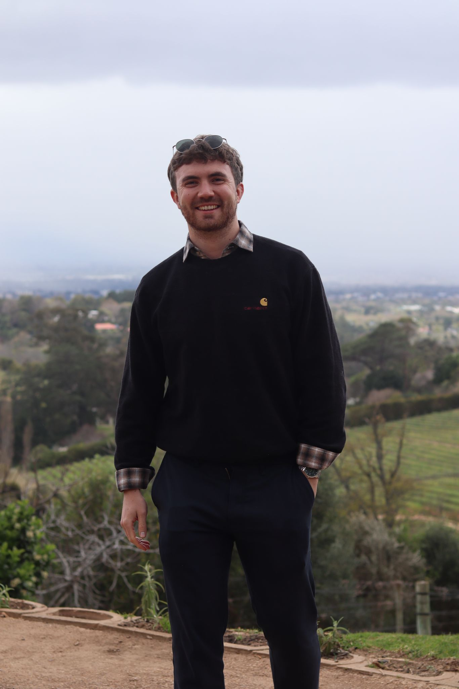

AI-Powered, Creative Product Manager with an entrepreneurial approach grounded in deep end-to-end experience
I'm a product manager who pairs end-to-end delivery experience with an entrepreneurial, AI-first way of working. I've taken products from blank page to launch — co-founding a carbon-labelling app — and driven measurable commercial outcomes for global brands. I'm looking for a product role in a start-up or scale-up where I can move fast, build things that matter, and make a social difference wherever the opportunity allows.

Scroll through my journey, starting in the present, winding back through my consulting experience, founding a not-for-profit, to my uni days at Oxford